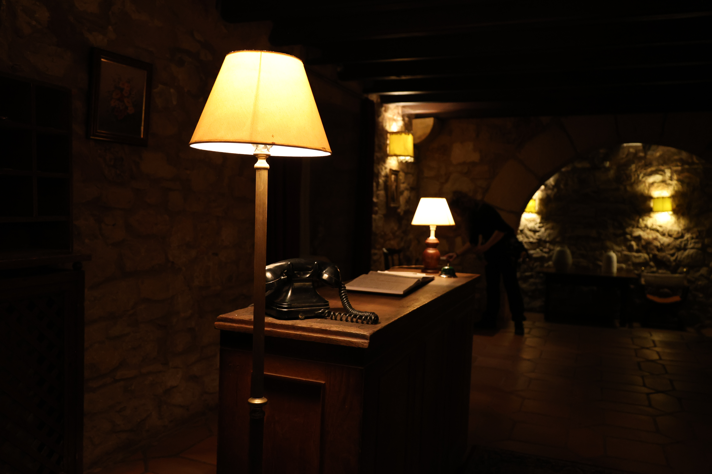
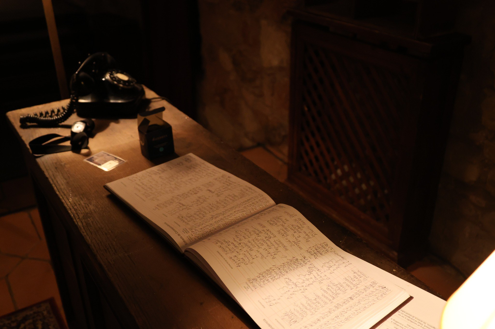
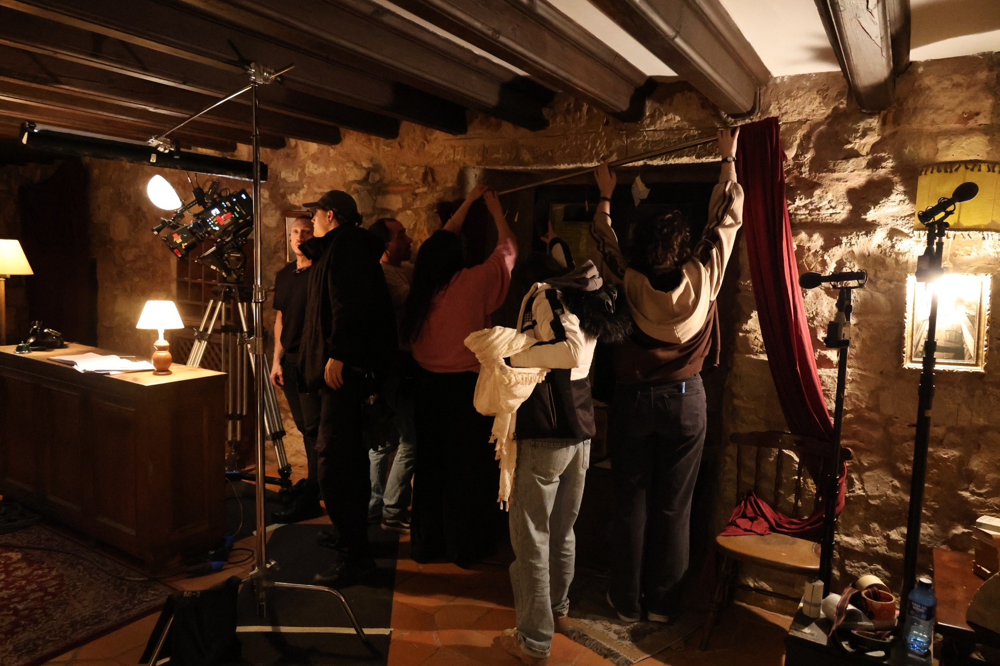
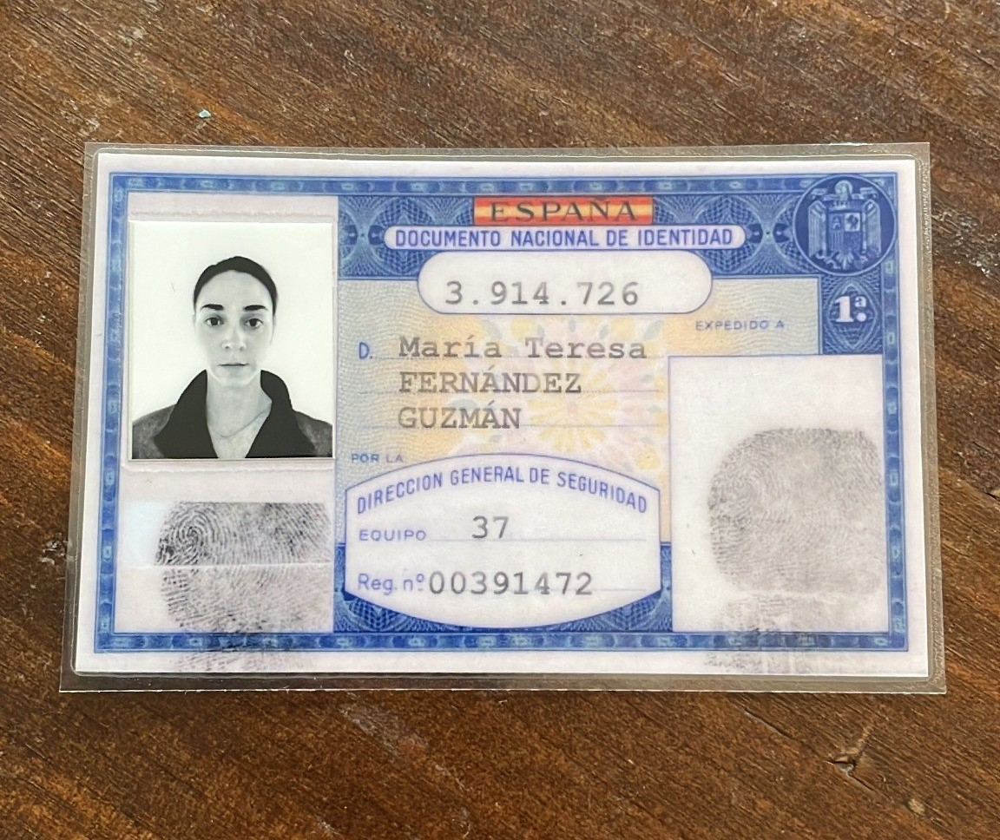
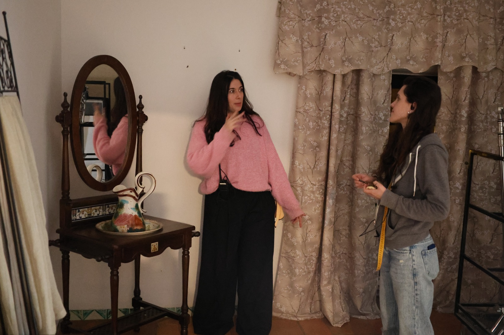

Opresión
Cortometraje · Dirección de arte

Opresión es un cortometraje en el que participé como directora de arte. El rodaje fue íntegramente nocturno y tuvo lugar en el Parador de Sigüenza, un edificio de Patrimonio Nacional. Esto supuso una dificultad añadida, ya que el equipo de arte apenas podía modificar o intervenir el espacio.

Ambientada en la España de los años 60, mi trabajo consistió en decorar tres estancias completas, desarrollando todo el atrezzo necesario para recrear la época. Además, diseñé y produje elementos gráficos como pesetas, DNI, libros, revistas y otros documentos utilizados durante el rodaje.





